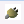

動作確認 (Windows編)
✏️ Edit this page on GitHubContents
#contents
サンプルコンポーネントの場所
インストールまたはビルドが正常に終了したら、付属のサンプルで動作テスト をします。サンプルは、通常は以下の場所にあります。
- スタートメニュー: [スタート] > [OpenRTM-aist] > [Java] > [components] > [examples]
- C:\Program Files\OpenRTM-aist<version>\examples\Java
- /OpenRTM-X.X.X-Java/installer/resources/Source/examples(X.X.Xはバージョン。) (ソースからビルドした場合)
サンプルコンポーネントセット SimpleIO を使って、OpenRTM-aist-Java が正しくビルド・インストールされているかを確認します。
サンプル (SimpleIO) を使用したテスト
RTコンポーネント ConsoleInComp、ConsoleOutComp からなるサンプルセットです。 ConsoleInComp はコンソールから入力された数値を OutPort から出力するコンポーネント、ConsoleOutComp は InPort に入力された数値をコンソールに表示するコンポーネントです。 これらは、最も Simple な I/O (入出力) を例示するためのサンプルです。 ConsoleInComp の OutPort から ConsoleOutComp の InPort へ接続を構成し、これらの2つのコンポーネントをアクティブ化 (Activate) することで動作します。
以下は、msi インストーラーで OpenRTM-aist をインストールした環境で、スタートメニューから各種プログラムを起動する前提で説明します。 スタートメニューから、OpenRTM-aist を右クリックし「開く」でフォルダーを開き、各プログラムへアクセスすると便利です。
{kind=link}
ネームサーバーの起動
まず、コンポーネントの参照を登録するためのネームサーバーを起動します。 [OpenRTM-aist 1.1] > [Tools] にあるショートカットの「Start Java Naming Service」をクリックしネームサーバーを起動します。
{kind=link}
起動すると、以下のようなコンソール画面が開きます。
{kind=link}
コンソール画面が開かない
ネームサーバーのコンソール画面が開かないケースがあります。この場合下記のようないくつかの原因が考えられますので、原因を調査して対処してください。
「Start Java Naming Service」は %RTM_ROOT%\bin\rtm-naming.bat にあるバッチファイルからネームサーバー (omniNames.exe) を起動します。 この際、omniNames.exe を参照するために環境変数 OMNI_NAMES を利用しています。 通常インストーラーで OpenRTM-aist をインストールした場合には、OMNI_ROOT 環境変数が自動で設定されますが、何らかの理由で環境変数が無効になっていたり、手動でインストールした場合などは、環境変数が設定されていないことがあります。
サンプルコンポーネントの起動
ネームサーバー起動後、適当なサンプルコンポーネントを起動します。先ほど開いたスタートメニューフォルダーの、[OpenRTM-aist 1.1] > [Java] > [Components] > [Examples] を開くと、図のようにいくつかのコンポーネントがあります。
{kind=link}
ここでは、「ConsoleInComp.bat」「ConsoleOutComp.bat」をそれぞれダブルクリックして2つのコンポーネントを起動します。 起動すると、下図のような2つのコンソール画面が開きます。
{kind=link}
コンポーネントが起動しない場合
コンポーネントが起動しない場合、いくつかの原因が考えられます。
コンソール画面が開いてすぐに消える
rtc.conf の設定に問題があり、起動できないケースがあります。上記スタートメニューフォルダーの「rtc.conf for examples」を開いて設定を確認してください。 例えば、corba.endpoint/corba.endpoints などの設定が現在実行中の PC のホストアドレスとミスマッチを起こしている場合などは、CORBA が異常終了します。
以下のような最低限の rtc.conf に設定しなおして試してみてください。
corba.nameservers: localhost
ランタイムエラーが出て終了する
ライブラリ等が適切にインストールされていない・設定されていない等の原因でラインタイムエラーが出る場合があります。
- 再起動してみる
- OpenRTM-aist をすべてアンインストールし、再インストールすることで改善される場合があります。
RTSystemEditor (RTSE) の起動
スタートメニューフォルダーから、RTSystemEditor を起動します。 RTSystemEditorは [OpenRTM-aist] > [Tools] > [RTSystemEditorRCP] にあります。
{kind=link}
ネームサーバーへの接続
RTSE が起動したらまずネームサーバーへ接続します。左ペインの上部にある、 
{kind=link}
{kind=link}
接続すると、ネームサービスビューに localhost が現れます。ツリー表示の [+] をクリックすると、先ほど起動した2つのコンポーネントが登録されていることがわかります。

エディタへの配置
システムを編集するエディタを開きます。上部のエディタを [開く] ボタン をクリックすると、中央のペインにエディタが開きます。
をクリックすると、中央のペインにエディタが開きます。
左側のネームサービスビューに  のアイコンで表示されているコンポーネント (2つ) を中央のエディタにドラッグアンドドロップします。
のアイコンで表示されているコンポーネント (2つ) を中央のエディタにドラッグアンドドロップします。
{kind=link}
接続とアクティブ化
ConsoleIn0 コンポーネントの右側にはデータが出力される OutPort  、ConsoleOut0 コンポーネントの左側にはデータが入力される InPort
、ConsoleOut0 コンポーネントの左側にはデータが入力される InPort  がそれぞれついています。
がそれぞれついています。
これら InPort/OutPort (まとめてデータポートと呼びます) を接続します。 OutPort から InPort (または InPort から OutPort) へドラッグランドドロップすると、図のようなダイアログが現れますので、デフォルト設定のまま [OK] ボタンをクリックします。


2つのコンポーネントの間に接続線が現れます。次に、エディタ上部メニューの [All Activate] ボタン  をクリックし、これらのコンポーネントをアクティブ化します。
アクティブ化されると、コンポーネントが緑色に変化します。
をクリックし、これらのコンポーネントをアクティブ化します。
アクティブ化されると、コンポーネントが緑色に変化します。

コンポーネントがアクティブ化されると ConsoleIn コンポーネント側では
Please input number:
というプロンプト表示に変わりますので、適当な数値 (short int の範囲内:32767以下) を入力し Enter キーを押します。 すると、ConsoleOut 側では、入力した数値が表示され、ConsoleIn コンポーネントからConsoleOut コンポーネントへデータが転送されたことがわかります。
以上で、コンポーネントの基本動作の確認は終了です。
他のサンプル
インストーラーには、このほかにもいくつかのサンプルコンポーネントが付属しています。 これらのコンポーネントも同様に起動し、RTSystemEditor でポート同士を接続し、アクティブ化することで試すことができます。
付属しているコンポーネントのリストと簡単な説明を以下に示します。
| ConsoleInComp.bat | コンソールから入力された数値を OutPort から出力する。ConsoleOutComp.exe に接続して使用する。 |
| ConsoleOutComp.bat | InPort に入力された数値をコンソールに表示するコンポーネント;。ConsoleInComp.exe に接続して使用する。 |
| SeqInComp.bat | ランダムな数値(Short、Long、Float、Double とそのシーケンス型)を出力するコンポーネント;。SequenceOutComp.bat に接続して使用する。 |
| SeqOutComp.bat | InPort に入力される数値(Short、Long、Float、Double とそのシーケンス型)を表示。SequenceInComp.exe に接続して使用する。 |
| MyServiceProviderComp.bat | MyService 型のサービスを提供するコンポーネント;。MyServiceConsumerComp.exe に接続して使用する。 |
| MyServiceConsumerComp.bat | MyService 型のサービスを提供するコンポーネント;。MyServiceProviderComp.exe に接続して使用する。 |
| ConfigSampleComp.bat | Configuration のサンプル。RtcLink から Configuration を変更して Configuration の挙動を理解するためのサンプル。 |
hogeee---002